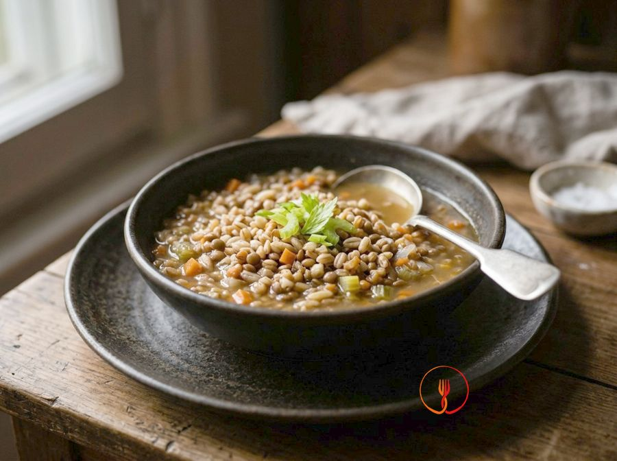

Zuppa di cereali
Ingredienti
- farro perlato120 gr
- orzo perlato100 gr
- grano saraceno80 gr
- lenticchie secche piccole100 gr
- carota1 numero
- costa di sedano1 numero
- cipolla piccola1 numero
- brodo vegetale
Fallo in casa: Brodo vegetale ›1,5 lt - olio extravergine d'oliva25 ml
- rametto di rosmarino1 numero
- Sale e pepeq.b.
Allergeni
Glutine, Sedano
Può contenere tracce di: Frutta a guscio, Senape, Soia.
Procedimento
- Controlla le indicazioni di cottura riportate sulle confezioni dei cereali e delle lenticchie. Sciacqua accuratamente farro, orzo, grano saraceno e lenticchie sotto acqua corrente.
- Trita finemente cipolla, carota e sedano. Versa l'olio in una pentola capiente e prepara un soffritto leggero per circa 5 minuti.
- Aggiungi le lenticchie e mescola per qualche istante, così da insaporirle con le verdure.
- Versa circa 1,2 litri di brodo caldo, aggiungi il rosmarino e cuoci le lenticchie per circa 15 minuti, verificando il loro tempo effettivo di cottura.
- Aggiungi farro e orzo e prosegui la cottura per circa 15–20 minuti, mescolando periodicamente.
- Incorpora il grano saraceno e continua la cottura per altri 10–15 minuti, controllando la consistenza dei diversi ingredienti.
- Se necessario, aggiungi altro brodo caldo per mantenere la zuppa morbida e cremosa. Regola di sale e pepe.
- Spegni il fuoco, elimina il rosmarino, lascia riposare per 5 minuti e completa con un filo d'olio extravergine a crudo.
Consigli dello chef
Consigli, errori e alternative:
- I tempi cambiano in base al tipo di cereale e alla lavorazione: controlla sempre le confezioni.
- Non aggiungere tutto il brodo in una volta: la quantità necessaria dipende dall'assorbimento.
- Per una consistenza più cremosa frulla una piccola parte delle lenticchie.
- Puoi sostituire il grano saraceno con avena, riso integrale o miglio, modificando i tempi di cottura.
- Per una zuppa più ricca aggiungi patate, zucca o funghi.
- Attenzione: farro, orzo e grano contengono glutine. Per una versione senza glutine utilizza esclusivamente cereali certificati senza glutine, come riso, grano saraceno e miglio, evitando contaminazioni crociate.
Valori nutrizionali (stima)
| Per porzione (880 g) | Per 100 g | |
|---|---|---|
| Energia | 3351 kJ / 801 kcal | 381 kJ / 91 kcal |
| Proteine | 30 g | 3.4 g |
| Carboidrati | 134 g | 15 g |
| di cui zuccheri | 6.1 g | 0.7 g |
| Grassi | 15 g | 1.7 g |
| di cui saturi | 2.2 g | 0.2 g |
| Fibre | 23 g | 2.7 g |
| Sale | 3.1 g | 0.3 g |
Valori stimati con l'AI su dati medi CREA / USDA: sono indicativi e non sostituiscono il parere di un medico o di un nutrizionista.
Apri la ricetta nell'app per la lista della spesa, le schede ingredienti e i negozi vicini.